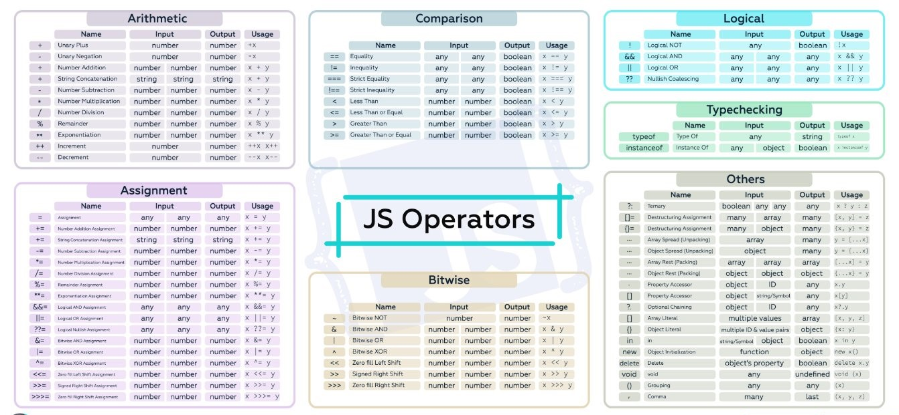
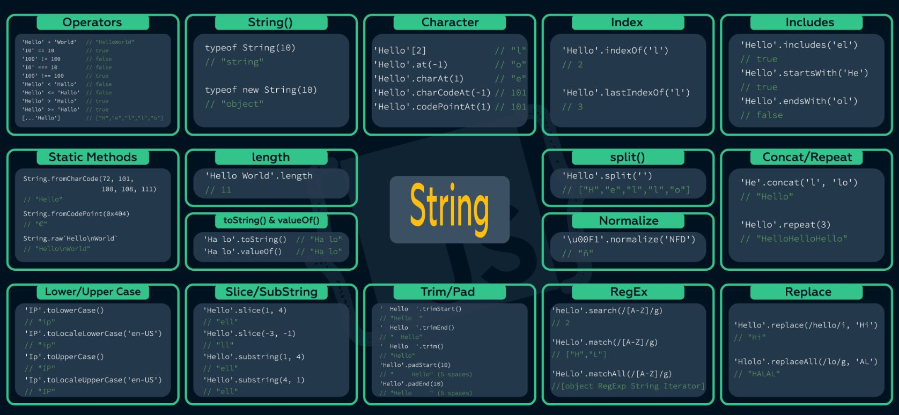

JavaScript is a versatile and widely-used programming language that was initially developed to make web pages interactive. Over the years, it has evolved into a powerful tool for both front-end and back-end web development, as well as for building various types of applications beyond the web. This introduction will provide you with a detailed overview of JavaScript, covering its history, features, use cases, and basic syntax
History:
JavaScript was created by Brendan Eich while he was working at Netscape Communications Corporation in 1995. Initially named "LiveScript," it was later renamed JavaScript to capitalize on the growing popularity of Java. Despite the name similarity, JavaScript and Java are distinct languages with different purposes and syntax.
Features:
High-level Language: A high-level programming language is a type of programming language that is designed to be human-readable and understandable, abstracting away many of the low-level details of computer hardware and memory management. High-level languages provide a more intuitive and user-friendly way for programmers to write code, focusing on the logic of the program rather than the intricacies of the machine's architecture JavaScript is a high-level programming language, which means it abstracts many of the complex details of computer hardware and memory management, making it more human-readable and easier to write.
Interpreted Language: An interpreted language is a type of programming language where the code is executed directly by an interpreter, as opposed to being compiled into machine code beforehand. Interpreted languages have a different execution model compared to compiled languages, which go through a separate compilation phase before execution. JavaScript is an interpreted language, which means that it doesn't require a separate compilation step. Instead, web browsers interpret the code directly, allowing for quick iteration during development.
Dynamic Typing: JavaScript uses dynamic typing, meaning you don't have to declare the data type of a variable explicitly. The type is determined at runtime, providing flexibility but also requiring careful attention to prevent type-related errors
Functions as First-Class Citizens: In JavaScript, functions are treated as first-class citizens. This means you can assign them to variables, pass them as arguments to other functions, and return them from functions.
Prototype-based Object-Oriented Programming: JavaScript is object-oriented, but its inheritance mechanism is prototype-based. Objects can serve as prototypes for other objects, allowing for object composition and inheritance.
Event-Driven and Asynchronous: JavaScript is well-suited for event-driven programming, making it the foundation for interactive web applications. It supports asynchronous programming through mechanisms like callbacks, Promises, and async/await, enabling non-blocking code execution.
Other Major Features
Core Principles and Purpose: JavaScript was initially designed to make web pages interactive by allowing developers to manipulate the Document Object Model (DOM), which represents the structure and content of a web page. Over time, its capabilities have expanded, and it is now used not only for web development but also for server-side scripting (Node.js), desktop application development (Electron), game development (with libraries like Phaser and Three.js), and more.
Syntax: JavaScript's syntax is similar to other programming languages like C++ and Java, making it relatively easy for developers familiar with those languages to learn. The language is case-sensitive and uses semicolons to separate statements. It also supports both single-line and multi-line comments.
Variables and Data Types JavaScript uses the 'var', 'let', and 'const' keywords to declare variables. It supports various data types including numbers, strings, booleans, arrays, objects, functions, and more. Unlike some statically typed languages, JavaScript is dynamically typed, meaning variable types can change during runtime.
Operators: JavaScript includes a variety of operators for performing arithmetic, comparison, logical, and assignment operations. For example, '+', '-', '*', '/' are used for arithmetic, '==', '===', '!=', '!==' for comparison, and '&&', '||', '!' for logical operations.
Control Structures: JavaScript supports standard control structures such as 'if' statements, 'else' clauses, 'while' and 'for' loops, and 'switch' statements. These allow developers to control the flow of their programs and execute code conditionally or iteratively.
Functions: Functions are a core concept in JavaScript, allowing developers to encapsulate code into reusable blocks. Functions can take parameters and return values. They can also be assigned to variables, passed as arguments to other functions, and even nested within each other.
Objects and Classes: JavaScript is an object-oriented language. It uses objects to represent data and behavior. Objects can be created using object literals or constructor functions. The introduction of ES6 (ECMAScript 2015) brought class syntax to JavaScript, making it more familiar to developers with experience in class-based languages
Asynchronous Programming:JavaScript's asynchronous programming capabilities are crucial for handling tasks that take time, such as network requests or file operations. Callbacks were historically used for asynchronous operations, but modern approaches like Promises and the 'async/await' syntax provide cleaner and more manageable code.
DOM Manipulation: ne of JavaScript's main roles is manipulating the DOM, allowing developers to change the content, structure, and style of web pages dynamically. This enables the creation of interactive and engaging user interfaces.
Libraries and Frameworks: JavaScript has a rich ecosystem of libraries and frameworks that simplify and enhance development. Popular front-end libraries include React, Vue.js, and Angular, while Node.js is a popular runtime for server-side JavaScript.


Use Cases
Front-End Web Development: JavaScript is primarily known for its role in enhancing the interactivity and user experience of websites. It's used to create dynamic elements, handle user input, and manipulate the Document Object Model (DOM) to update content without requiring full page reloads.
Back-End Web Development: With the introduction of technologies like Node.js, JavaScript can now be used on the server-side as well. This enables developers to build complete web applications using a unified language for both front-end and back-end development.
Mobile App Development: Frameworks like React Native and Ionic allow developers to create mobile applications using JavaScript, sharing a significant portion of code between different platforms.
Desktop App Development: Tools like Electron enable the development of cross-platform desktop applications using JavaScript, HTML, and CSS.
Game Development: Libraries like Phaser and Three.js enable game development using JavaScript, providing tools for rendering graphics and handling user interactions.
Basic Syntax:
Here's a simple example of JavaScript syntax:
// Variable declaration let
greeting =
"Hello, "; Const
name =
"John";
// Function definition function greet
(person) {
return
greeting + person;
}
// Function call let
message =
greet
(name);
console.
log
(message);
// Output: Hello, John
This example demonstrates variable declaration, function definition, and function invocation in JavaScript.
In conclusion, JavaScript is a versatile and dynamic programming language that has revolutionized web development and extended its reach into various application domains. Its ability to create interactive user interfaces, support asynchronous programming, and operate both on the front end and back end makes it an essential tool for modern software development.
Resourceful Websites To Get Everything You Need To Know About JavaScript
The Best YouTube Tutorials to get you Started on JavaScript